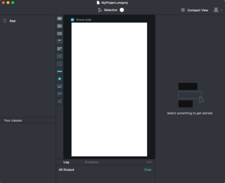
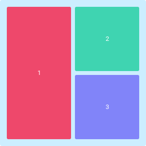
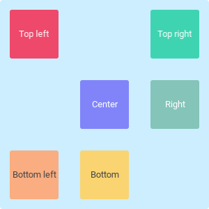
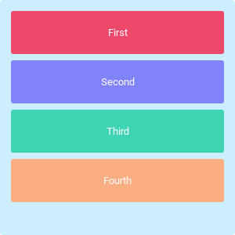
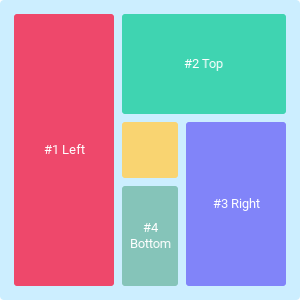
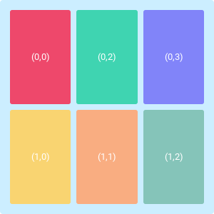

Introduction to Fuse
This module will provide you with an introduction to the fundamentals of Fuse and is a good place to be if you're just getting started. While we don't assume any prior experience with programming, some familiarity with markup languages can be helpful.
The goal of this module is to give you a good understanding of what makes up a Fuse app, and to gain some practical knowledge in the process.
[callout info] We will also cover how JavaScript fits in with Fuse, so some experience with JavaScript will be helpful in that section. [/callout]
New project
We start off by creating a new project. If you followed the quickstart guide, feel free to skip to the next section.
When you first open Fuse, you are presented with the Fuse dashboard. From here, you can start a new project using one of the provided templates, or open one of your previous ones. For this section, we want to create a new project using the "Fuse project" template. This gives us a good starting point for playing around with some of the core features of Fuse.
After selecting the template, click "create". Pick a name and location and then click "create" again. When Fuse is done building your project you will be presented with a preview viewport with a white, blank screen.

Fuse projects
Every Fuse app consists of at least two files:
- ProjectName.unoproj -- Contains information about the project, like which files to include, app icons, allowed screen orientations and much more.
- MainView.ux -- The main UX file of our app. It is in UX files we do most of our work in Fuse. Anything from GUI layout to animations are put in these files.
- New projects usually start off with a single UX file, but we can create as many as we want.
When we start the Fuse preview, it looks for a .unoproj file in the folder we're in. As long as this file exists, and we have a .ux file with an App tag (we'll cover UX markup next), we have a valid Fuse project.
[callout info] Why is it called .unoproj you might wonder? Fuse is built on top of a programming language called Uno. This means that when Fuse compiles your code, it is actually compiling an Uno project. Knowledge about Uno is not required in order to use Fuse, but for anyone who wants to dig deeper into the Fuse technology stack, more information can be found here. [/callout]
UX files
All UX file names end with the.ux file extension. UX is a markup language based on XML. It provides a powerful and expressive way of defining all visual aspects of our apps: GUI layout, animations, navigation structure, reusable components, input controls, and more.
Our chosen project template gives us only one UX file to start with, called MainView.ux. To start building your app, open this file in your text editor of choice. You'll notice the file only contains two lines of code; a pair of opening and closing App tags.
[callout info] UX markup is explained in detail in the next section. [/callout]
<App>
</App>
Any Fuse project must, and can only, have one pair of App tags, and everything between these tags is a part of your app.
If you paste the following code into your MainView.ux file and save it, you'll notice the Fuse preview window updating with the text "Hello, world!" displayed in the top left corner. Don't worry too much about the code means, we will cover everything in the next section.
<App>
<Text Value="Hello, world!" />
</App>
Introduction to UX
As mentioned in the previous section, UX is the way we do most of our work in Fuse. It is where we define everything visual, as well as animations and navigation. In this section we'll introduce the basics of UX markup.
[callout info] If you're already familiar with XML, feel free to skip forward to the next sub chapter. The terminology is a bit different from regular XML though so it may be worth a look. [/callout]
What is UX for?
UX is used for anything and everything visual. You define your app layout, all animations, navigation, and even gesture recognition in UX.
Layout is the act of arranging various shapes and controls on the screen. Fuse layout engine lets us easily define reactive layouts, that automatically adapt to different screen sizes and aspect ratios.
Animation is the act of making things change over time. Fuse comes with a state of the art declarative animation system, which lets you animate absolutely anything you can think of. Any object can be moved, and any property can be changed.
With navigation we define the structure of our app. Which pages exist, and how do we go from one page to the next. We can even define completely custom transitions in pure declarative UX.
UX is also used to define reusable components. Custom input controls can be created using the gesture and selection APIs, and can easily be turned into reusable packages that can easily be shared between several app projects.
What not to use UX for
UX is not used for fetching and transforming data. For that, we use JavaScript. While UX does have a powerful expression language built in, it is not a suitable scripting language. We also prefer to keep and mutate the app state in JavaScript.
Getting started writing UX
In spoken languages there are many ways to say the same thing. In UX we write what we want in a specific way so that Fuse can easily work out precisely what we are saying. When we talk about the 'way we write things' in languages we are talking about the syntax of the language.
The syntax of UX (the way we write UX)
UX is made up of objects. What an object "does" or "what it's for" depends on it's name and where it is used. Objects can be written in two ways:
<Something /><Something> </Something>
Right now, all we have to know is that the second version is used when we want to put other Objects inside our Something Object. Phew, it's all a bit abstract right now but once we plow through a few more details we can start seeing this stuff in context.
It is very common for people to talk about parts of the text in our UX so we need to know one extra thing: this is a tag <Name>. More precisely the tag is what we call the thing that starts with < and ends with >. It will contain at least a name, but often more.
Up above we were showing two ways of writing an object:
<Something />
This is an object that doesn't contain any other objects. When you see a tag ending in /> then it's called a 'self closing tag'
<Something> </Something>
Here we see that the <Something> tag doesn't end in /> so it needs to be closed. That's why the second tag starts with </. It is saying that this is 'closing tag' for a Something tag above.
[callout info] Remember that even though example number two has 2 tags it is still one object. It's just one that can contain other objects as well. [/callout]
Using this knowledge
If you are anything like me, then at this point your head is swimming with all these terms that we don't have a use for yet, so lets look at some real UX.
<StackPanel Orientation="Horizontal">
<Text Value="Hello Jim!" ></Text>
<Text Value="World" />
</StackPanel>
With our newly acquired prowess in UX we can read the UX above as:
We have a
StackPanelObjectwhich contains 2TextObjects.
We could also get super technical and point out some details:
------------------------------------ Opening tag
/
v
<StackPanel Orientation="Horizontal">
<Text Value="Hello" /> <--------------- self closing tag
<Text Value="World" /> <--------------- self closing tag
</StackPanel>
^
------------------------------------ Closing tag
But you may be looking at those opening and self closing tags above and wondering why they have extra stuff in them. If you are then well spotted! Those are called Properties.
If we have an apple in real life and you were asked about its properties, you might say "it's round" or "it's ripe" or something like that. Properties in this case gives us extra information about the nature of the apple. The exact same it true for Properties in UX.
Let's look back at the example above:
<Text Value="Hello Jim!" />
The Text object is what we use to show text in our App and the Value Property tells Fuse you want the text to be "Hello Jim".
Just like how an apple and a truck have different properties in real life, different objects in UX have different properties too. To find what properties you can put on each object type, we have lots of documentation to help.
One last note on properties: when we have an object with opening & closing tags we only add the properties to the opening tag, so:
/ Only need properties on this one.
v
<StackPanel Orientation="Horizontal">
</StackPanel>
^
We are not allowed to set properties here!
And given that we are talking about small details: objects that are inside other objects are called children. The object that contains them is called the parent object.
Before we wrap up this part lets annotate our UX again with what we have learned
------------------------------------ Opening tag (named StackPanel). Parent to two objects.
/ ------------------------ Has an Orientation Property
/ /
v v
<StackPanel Orientation="Horizontal">
<Text Value="Hello Jim!" /> <----------- Child object / self closing tag / Has a Value Property
<Text Value="World" /> <--------------- Another child / self closing tag / Has a Value Property
</StackPanel>
^
------------------------------------ Closing tag
Classes
A class defines a recipe for an object. Fuse has lots of useful objects defined for you but very soon you will want to define your own.
Luckily all we have to do is make something we like and then tell Fuse that this is a recipe for making objects just like it.
For example, let's say we make a nice Rectangle with a Text object inside it:
<Rectangle Color="#f0a">
<Text Value="Button" Margin="10" />
</Rectangle>
Later on we decide we want to use this in lots of places in our app. All we have to do to turn this into a Class (a recipe for objects) is use ux:Class and give it a name.
<Rectangle ux:Class="TextRectangle" Color="#f0a">
<Text Value="Button" Margin="10" />
</Rectangle>
And now we can use it just like any other object that came with Fuse!
<TextRectangle />
[callout info] Top tips:
- You may be wondering if the objects we have already seen (
StackPanel&Text) have classes too, and the answer is yes. The Objects you make are just as powerful as the ones that come with the product which is pretty cool. - Even though
ux:Classlooks like aPropertyit is not one. If you see something that looks like aPropertybut which start withux:, then it has special behavior. These special behaviors are explained in the documentation so don't worry about trying to memorize them all straight away. [/callout]
Introduction to Layout
As we mentioned in the previous section; layout is the act of sizing and positioning elements on the screen. Since our apps are expected to run on a ton of different screen sizes, with different aspect ratios and pixel densities, creating app layouts is not as simple in the real world as it is in a prototyping tool. Now, that doesn't necessarily make it harder, you just have to be aware of how to properly structure things in order to get the expected layout on your various devices.
We do this in Fuse by grouping objects together using various different Panel types, each with their own layout behavior. Panels are in charge of positioning their children according to different predefined layout rules. In this section we'll cover the most important ones, and how they can be used together to easily create almost any app layout.
Before we get started looking at the various layout types, there are a couple concepts you should be aware of.
Available space
Each panel is in charge of assigning a size and position to all of its children. Each object (not just panels) has a certain available space in which it must place its children. How this size is determined can vary depending on the panel type, but most often it is assigned by the panels parent object, in just the same way as the panel assigns a size to its own children. It is a recursive process, where the available space is shrunk (or sometimes just kept the same) in each layer.

Alignment
All visual objects can also have an Alignment, which determines how an element should place itself in the case where it is smaller than its available space.
The Alignment property can be set to one of the following values:
Default- Stretches the object in all directions,Left- Aligns element to the leftHorizontalCenter- Centers element horizontallyRight- Aligns element to the rightTop- Aligns element to the top.VerticalCenter- Centers element vertically.Bottom- Aligns element to the bottomTopLeft- Aligns element to the top left cornerTopCenter- Centers element horizontally and aligns it to the topTopRight- Aligns element to the top right cornerCenterLeft- Centers element vertically and aligns it to the left,Center- Centers element both horizontally and verticallyCenterRight- Centers element vertically and aligns it to the rightBottomLeft- Aligns element to the bottom left cornerBottomCenter- Centers element horizontally and aligns it to the bottomBottomRight- Aligns element to the bottom right corner
The following figure shows how objects respond to a handful of the alignment options listed above.

Layout types
Now it's time to learn about some layout types and how they can be combined to create almost any app layout you can think of. You'll be introduced to three layout types: StackPanel, DockPanel and Grid. Note however that these aren't the only layout types in Fuse. They are however by far the most commonly used ones, and cover most of the use-cases you'll run into. You'll see more of them listed in the outline at fusetools.com/docs.
[callout info]
The various panels we introduce here are actually just normal panels with an associated Layout type. What we mean by this is that a StackPanel is actually just a Panel with a StackLayout attached to it. Some of the available layout types do not have these Panel wrappers, and so you have to add them to a normal Panel yourself in order to use them.
[/callout]
Here is an example showing how you can use the ColumnLayout layout:
<Panel>
<ColumnLayout />
</Panel>
StackPanel
The StackPanel arranges its children in a line, either vertically or horizontally.
<StackPanel ItemSpacing="10">
<Rectangle Color="Red" Height="50"/>
<Text Value="Some text" />
<Rectangle Color="Blue" Height="50"/>
</StackPanel>
Notice that we've set the Height of each Rectangle to 50. This is necessary because rectangles don't have any implicit size. Otherwise, because of the way the StackPanel sizes its children, they wouldn't get any height at all. This is not necessary for Text objects since they have an implicit height based on their value and font size.

You can read about the details of StackPanel in its reference docs.
DockPanel
The DockPanel allows us to subdivide the available space by "docking" each child to one of its four sides, one after the other.

<DockPanel>
<Rectangle Dock="Left" Width="100" Color="Red"/>
<Rectangle Dock="Top" Height="100" Color="Green"/>
<Rectangle Dock="Right" Width="100" Color="Blue"/>
<Rectangle Dock="Bottom" Height="100" Color="Teal"/>
<Rectangle Color="Yellow"/>
</DockPanel>
Just as with the StackPanel, we must set the height and width of some of the children. When docking to the left or right, we must ensure that the object being docked has some width, either by assigning a width explicitly like we've done here, or by making sure the object has its own implicit width. If we don't specify the Dock property for a child, it is stretched to fill the remaining space of the DockPanel.
Read all about the DockPanel here
Grid
Grid lets us divide the available space into a set of rows and columns, and use those to place its children.
<Grid RowCount="2" ColumnCount="3">
<Rectangle Color="Red"/>
<Rectangle Color="Green"/>
<Rectangle Color="Blue"/>
<Rectangle Color="Yellow"/>
<Rectangle Color="Orange"/>
<Rectangle Color="Teal"/>
</Grid>

In the example above, we've created a Grid with two rows and three columns, where each row has the same height, and each column has the same width. Unlike with the StackPanel and DockPanel, objects placed by the Grid don't need an explicit or implicit size, since they don't themselves affect the size of the cells (unless we use automatically sized rows/columns).
We have many options when defining the rows and columns of a Grid. The RowCount and ColumnCount properties provide us with a convenient way of defining a number of equally sized rows and columns, but there are other, more configurable, ways of defining them as well. You can read about it here.
Combining layout types to create something real
Lets combine what we've learned so far to create something a bit more complex than just a single layout panel.
<App Background="#ddd">
<DockPanel>
<Rectangle Dock="Top" Color="#63b8ff">
<Text Value="My first app" Alignment="Center" Margin="20"/>
</Rectangle>
<Rectangle Color="White" CornerRadius="5" Alignment="Center">
<StackPanel Alignment="Center" Margin="45">
<Text Alignment="HorizontalCenter" FontSize="35">This is</Text>
<Text Alignment="HorizontalCenter">our</Text>
<Text Alignment="HorizontalCenter" FontSize="25">first</Text>
<Image Url="https://www.fusetools.com/assets/dist/images/logo-white-header.png"
Color="#333"
StretchMode="PixelPrecise"/>
<Text Alignment="HorizontalCenter" FontSize="30">App</Text>
</StackPanel>
</Rectangle>
<Grid ColumnCount="3" Dock="Bottom" Height="60" Color="White">
<Text Alignment="Center" Value="Left" />
<Text Alignment="Center" Value="Center" />
<Text Alignment="Center" Value="Right" />
</Grid>
</DockPanel>
</App>
The example above has three main parts. The outer most panel (right after the App object) is a DockPanel. Within this DockPanel we've placed three rectangles. Docked to the top, we've created an "app bar" with the title of our app and a blue/turquoise background. Docked to the bottom, we've made a dummy "navigation bar", which is quite common to see in most apps with more than a single page. This navigation bar consists of a Grid with three columns and just one (by default) row. It automatically places its three Text objects (its child objects) into these columns. Finally, we've added a stack of Text objects with an image in the middle, pointing to the Fuse logo using the Url property. Their parent StackPanel is inside a Rectangle which has a white background and some CornerRadius, to make its corners curved.
If you copy and paste this code into your MainView.ux and save the file, you'll notice how easy it is to get started creating realistic app layouts, with just a few lines of UX.
Adding some business logic with JavaScript
The easiest way to get started adding some JavaScript to our app is to add a JavaScript object. We can then write JavaScript directly inside it, like so:
<JavaScript>
var some = "JavaScript code";
</JavaScript>
We can either write the code inline, like above, or keep it in its own file and reference it from UX:
<JavaScript File="someJSFile.js" />
In either case, the JavaScript object defines a CommonJS module. For our purposes, what this means is that there exists an object called module, through which we can export our variables to the outside world (our UX). By adding them to the exports member on the module object:
<JavaScript>
var myVariable = 1234;
module.exports = {
myVariable: myVariable
};
</JavaScript>
myVariable is now available from UX. In order to use it however, we need to create a binding to it. This is very easily done by enclosing the name in curly braces: {``name``}. In our case, we can bind to myVariable like so: {myVariable}. The following example shows how we would bind the Value property of a Text object to the myVariable variable:
<Text Value="{myVariable}" />
Your can also bind events to functions:
<JavaScript>
function buttonClicked() {
console.log("A button was clicked");
}
module.exports = {
buttonClicked: buttonClicked
};
</JavaScript>
<Button Text="My button" Clicked="{buttonClicked}"/>
Displaying lists of data
Most apps need to display lists of content, and for a lot of apps this is how most of its content is displayed. You can export arrays of data from JavaScript just as you export any other variable. You might wonder how we build a list using UX? The answer is the Each class.
Each is a class that can be used to replicate an object once per item in an array. Each has a property called Items which we can bind to an array. It will then replicate whatever children it has once per item in that array. The following example creates a stack of colored rectangles, each with their own text item.
<JavaScript>
var ourList = [
{ text: "Welcome", color: "#7FDBFF" },
{ text: "to", color: "#01FF70" },
{ text: "Fuse", color: "#FF4136" },
{ text: "!", color: "#B10DC9" },
];
module.exports = {
ourList: ourList
};
</JavaScript>
<StackPanel>
<Each Items="{ourList}">
<Rectangle Color="{color}">
<Text Value="{text}" Margin="15,10" />
</Rectangle>
</Each>
</StackPanel>
Responding to changes in the data
In order to make our UI automatically update when we make changes to our data, we need a way to let it know that a something has happened. In Fuse, we do this through something called Observables. An Observable value is a value that can change over time. Other entities, like our UI, can subscribe to being notified of whenever one of these observable values have changed. To create an Observable value, we first have to get a hold of the FuseJS/Observable module:
var Observable = require("FuseJS/Observable");
With the observable module at hand, we can very easily create an observable value like so:
var observableValue = Observable(10);
and make changes to it through its value property:
observableValue.value = 40;
if we data-bind to this variable, the UI will automatically update whenever we make changes to it.
[callout info]
We do not use the new keyword when creating Observable values.
[/callout]
List observables
Observables can also act as lists of observable values. We create an observable list in the exact same way as we create observable values:
var observableList = Observable(1,2,3,4,5) //observable list with 5 values
We can then display this list in the exact same way as we did with the array, except we can now also add and remove items and have the UI automatically update.
observableList.add(6);
observableList.remove(5);
observableList.removeAt(0);
Check out the observable API reference for a full list of cool stuff you can do with observables.
When not to use JavaScript
While JavaScript is an extremely useful language, we want to make sure we use it for suitable tasks. In Fuse, we rely on JavaScript when we need to manipulate our app state or communicate with the outside world. That means such things as fetching data from a REST API, communicating with a chat server over web sockets, or saving user preferences to disk.
It is important to understand that all animations in Fuse are done purely in UX markup. Our animations can be parameterized by binding to JavaScript, but there is no event loop going on from the JavaScript side. All JavaScript happens on its own thread, asynchronously. Everything that is performance critical runs as close to the app UI as it can to keep animations fast and smooth.
Working with components
Componentization is a cornerstone of the Fuse workflow. Componentization is the act of splitting your UX into smaller reusable blocks, either as a means of styling, to reduce the need for repeating UX in several places, or just as a way of splitting our UX up into different files.
Since componentization is such an important part of Fuse, we've spent a lot of our time and effort in making it both simple and powerful. As mentioned earlier in this module; all that is needed in order to turn a piece of UX into a reusable component, is to add the ux:Class attribute to it, at which point we call that piece of UX a class definition. Lets see how we can use this to clean up the code we wrote in the layout chapter:
<App Background="#ddd">
<DockPanel>
<Rectangle Dock="Top" Color="#63b8ff">
<Text Value="My first app" Alignment="Center" Margin="20"/>
</Rectangle>
<Rectangle Color="White" CornerRadius="5" Alignment="Center">
<StackPanel Alignment="Center" Margin="45">
<Text Alignment="HorizontalCenter" FontSize="35">This is</Text>
<Text Alignment="HorizontalCenter">our</Text>
<Text Alignment="HorizontalCenter" FontSize="25">first</Text>
<Image Url="https://www.fusetools.com/assets/dist/images/logo-white-header.png"
Color="#333"
StretchMode="PixelPrecise"/>
<Text Alignment="HorizontalCenter" FontSize="30">App</Text>
</StackPanel>
</Rectangle>
<Grid ColumnCount="3" Dock="Bottom" Height="60" Color="White">
<Text Alignment="Center" Value="Left" />
<Text Alignment="Center" Value="Center" />
<Text Alignment="Center" Value="Right" />
</Grid>
</DockPanel>
</App>
This app screen has three logical components: the top bar, the bottom bar, and the card we've put in the center. Lets turn each into a component and put it in its own file:
AppBar.ux:
<Rectangle ux:Class="TopBar" Color="#63b8ff">
<Text Value="My first app" Alignment="Center" Margin="20"/>
</Rectangle>
TabBar.ux:
<Grid ux:Class="TabBar" ColumnCount="3" Height="60" Color="White">
<Text Alignment="Center" Value="Left" />
<Text Alignment="Center" Value="Center" />
<Text Alignment="Center" Value="Right" />
</Grid>
Card.ux:
<Rectangle ux:Class="Card" Color="White" CornerRadius="5" >
<StackPanel Alignment="Center" Margin="45">
<Text Alignment="HorizontalCenter" FontSize="35">This is</Text>
<Text Alignment="HorizontalCenter">our</Text>
<Text Alignment="HorizontalCenter" FontSize="25">first</Text>
<Image Url="https://www.fusetools.com/assets/dist/images/logo-white-header.png"
Color="#333"
StretchMode="PixelPrecise"/>
<Text Alignment="HorizontalCenter" FontSize="30">App</Text>
</StackPanel>
</Rectangle>
and with these three components in place, we can simplify our MainView.ux into the following:
<App Background="#ddd">
<DockPanel>
<TopBar Dock="Top"/>
<Card Alignment="Center" />
<TabBr Dock="Bottom"/>
</DockPanel>
</App>
Doesn't that look a lot cleaner? Note that we didn't make the Dock and Alignment properties a part of the class definitions. That is because the decision of how to align or dock an object belongs at the place the object is create, not where its class is defined. This is however just a convention - the app would work just as well with these properties set on the class definition, it would just have been the wrong place to make the decision about docking.
App structure and testing
In this section we want to give you a general idea of how we structure apps in Fuse. We will also cover how to get started writing unit tests.
Structuring an app for scale
When just getting started with Fuse, it's ok to just put everything in one file. While we're just prototyping a single screen, this can even make it easier and faster to iterate. As our app grows however, we need to start thinking more about how to properly structure our app so that it doesn't become difficult to manage.
We usually separate between three component types in Fuse apps. We therefore like to separate our UX files based on what type of component it contains, and group them in different folders:
- Components
- Pages
- Styles
In your Components folder, you'll add your custom components, which are created specifically for this app, but which are not in themselves entire pages. Here might be a "tab bar control", a custom "switch" or various list view items which should appear in more than just one list.
The Pages folder contains all the pages of our app. Most, if not all, components in this folder will derive from the Page class. Although deriving from Page is usually not strictly necessary to be used in navigation, we consider it good practice, since it conveys both meaning and adds some additional properties which can be useful in the context of navigation.
Styles contain styled components, which are defined to give your app a consistent look. Text classes with specific font and font sizes as well as styled with the correct colors. You will also want to define sizes and margins which should be the same across your entire app.
Testing
You can easily add unit tests for your Fuse projects using the ux:Test attribute:
<Panel ux:Test="AUnitTest">
<JavaScript>
throw new Error("This test fails")
</JavaScript>
</Panel>
<Panel ux:Test="AnotherUnitTest">
<JavaScript>
console.log("This test will pass");
</JavaScript>
</Panel>
We can then run our tests using the following command from the terminal (on macOS) or command prompt (on Windows) while in your project directory:
uno test ProjectName.unoproj
If a test throws an error, it will be regarded as failing. If nothing is thrown, the test passes. Pretty simple! Check out the ux:Test documentation for more details.
[callout info] The current implementation of unit tests in Fuse is quite rudimentary. You can expect the testing API to be expanded upon in the future. [/callout]
Animation basics
Fuse comes with a declarative and extremely expressive animation system, which is both easy to learn and very fun to play with.
There are two core concepts you need to grasp in order to create animations in Fuse: triggers and animators. In short, triggers are objects that respond to events or user input and which activate animators, while animators are in charge of transforming objects or changing their properties over time in response to being activated by triggers. A very nice thing about animators in Fuse, is that they always know how to undo themselves. This means that you never have to make sure you animate your objects back into place whenever a trigger is deactivated; this is taken care of by Fuse.
An important thing to understand about animations in Fuse, is that they describe a "deviation from a rest state". The rest state is the app as you describe it in UX, before any animation. If we for example are creating a button, we usually define the rest state of the button to be the "unpressed" state. We can then easily describe how the button should look when we press it using a WhilePressed trigger. The following example creates a custom button which is scaled down while it is pressed:
<Rectangle ux:Class="AnimatedButton">
<Text Value="Press me" />
<WhilePressed>
<Scale Factor="0.8" Duration="0.2" />
</WhilePressed>
</Rectangle>
Any visual object in Fuse is clickable, so animating in response to the user pressing is as simple as adding a WhilePressed trigger as a child. Following is a quick introduction to some of the most useful triggers and animators. For the complete list, checkout the triggers and animators ux references.
Triggers
WhilePressed- active as long as your finger is on the objectClicked- activates when you press and release the finger on the same object. Deactivates as soon as it is done activating.WhileTrue- Can be toggled from UX, or data-bound to a boolean value in JavaScript.Adding-/RemovingAnimation- Used to animate objects that are added or removed from the visual tree.LayoutAnimation- Used to animate objects when they are assigned a new position or size by the layout engine.WhileActive- Is active as long as it is in the currently active page (we briefly discuss navigation in the next section).
Animators
Move- Moves the object aroundScale- Scales objects. This scaling does not affect layout.Rotate- Rotates an object. This is by default a 2D rotation, but Fuse can also do rotations in 3D.Change- Change allows you to animate any property.
In the following example, we've extended our button to have a more complete animation. We now change its color, scale, and shadow distance, to make it look more natural. We've also added some nice Easing curves to it.
<Rectangle ux:Class="AnimatedButton">
<Shadow ux:Name="shadow" Distance="7" Angle="45"/>
<Text Value="Press me" Color="White" Margin="18,14"/>
<LinearGradient StartPoint="0,0" EndPoint="1,0">
<GradientStop ux:Name="stop1" Color="#23A1AD" Offset="0" />
<GradientStop ux:Name="stop2" Color="#28B892" Offset="1" />
</LinearGradient>
<WhilePressed>
<Change stop1.Color="#4EC4A7" Duration="0.15" />
<Change stop2.Color="#43B4BD" Duration="0.15" />
<Change shadow.Distance="4" Duration="0.15" Easing="CubicOut" EasingBack="CubicIn"/>
<Move Vector="-2,2,0" Duration="0.15" Easing="CubicOut" EasingBack="CubicIn"/>
<Scale Factor="0.95" Duration="0.15" Easing="CubicOut" EasingBack="CubicIn"/>
</WhilePressed>
</Rectangle>
Navigation basics
Most non-trivial apps consists of more than just one screen. When making multi-page apps, it is important to have a clear way of defining how one can move between pages. Fuse has its own hierarchical navigation system, based on the Router and Navigator classes. By using this system we automatically get the ability to keep track of navigation history, and make use of the hardware back button in the case of Android. Learning to use this system is however beyond the scope of this module, so if you're interested, take a look here.
For the purpose of just getting started, lets take a look at a different navigation primitive in Fuse, called the PageControl. The PageControl, although more limited in its usage, is an extremely useful control. It allows us to swipe with our finger to navigate horizontally (by default) between as many pages as we want. Lets create an app with three pages, each with its own full screen color:
<App>
<PageControl>
<Page Color="Red" />
<Page Color="Green"/>
<Page Color="Blue"/>
</PageControl>
</App>
It's that simple! Feel free to open up one of the pages and start adding some content to the pages. Just open the Page object and put whatever you want in between. You can also try moving the pages to their own files using the ux:Class attribute discussed earlier.
<App>
<PageControl>
<Page Color="Red">
<Text Value="This is some content" Alignment="Center" FontSize="35"/>
</Page>
<Page Color="Green">
<AnimatedButton Alignment="Center" />
</Page>
<Page Color="Blue">
<Rectangle CornerRadius="10" Color="#f0f" Width="100" Height="100"/>
</Page>
</PageControl>
</App>
What is Uno?
We've mentioned the Uno programming language a couple times in this module, so we'll spend this last chapter setting the record straight about what Uno is, and how it might affect you.
Uno is a programming language, quite similar to C#, which is the basis on which Fuse is built. Does this mean you need to learn Uno to create apps in Fuse? Absolutely not. The only case where you might need to use Uno, is if you're implementing a wrapper for some native library which has still not been covered by us or the community. While the Fuse components you use in UX markup are mostly implemented in Uno code, we have strived to make these APIs as expressive as possible, so that you can make whatever you can imagine in pure UX markup, and then rely on simple JavaScript for the business logic.
That being said, Uno does have some very neat features, which, if you envision yourself as someone who might be interested in poking a bit deeper into the inner workings of Fuse, might be interested in. One of these features, and perhaps the most important one, is the ability to write Java and Objective-C directly in the language as foreign code blocks. This makes interop with native libraries extremely convenient and easy to get started with. That's not to say you'll never run into any challenges when interacting with third party native libraries, but we are constantly working on imporoving language level interoperability provided by Uno.
What's next?
Congratulations on getting through the introduction to Fuse. We've covered a lot of the basics, but there is still a ton of things to learn. Going forward you have a few options.
- The Hikr tutorial goes through creating an app from scratch, covering everything from layout and animation, to navigation and app structure, while creating a real app prototype in the process.
- If you like just exploring by yourself and learning by example, you should check out our examples page, which contains a bunch of interesting layout and animation examples. For more code oriented (as well as visual) examples, checkout the open source github repo fuse-samples.